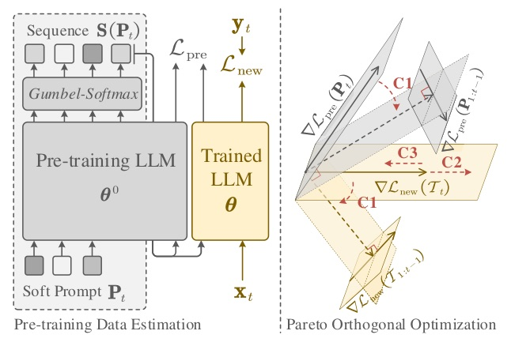
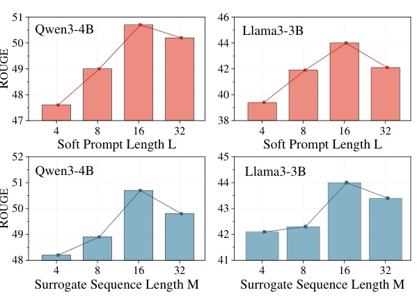

EOUPCT 用可微 pseudo data 尋找下一次更新最可能傷到的知識邊界，再把更新投影到安全方向。
不要只保護「已看過的舊任務」。
EOUPCT 先估計缺席的預訓練梯度，再讓新任務更新避開它。
| 路線 | 能解什麼 | 仍缺什麼 |
|---|---|---|
| 梯度正交 / OLoRA | 減少已知任務間干擾 | 沒有未知預訓練梯度 |
| Data rehearsal | 重播歷史 samples | 拿不到原始預訓練資料 |
| Parameter isolation | 隔離新舊 task 模組 | 需歷史模型 / routing；統一模型仍可能遺忘 |
EOUPCT 選擇在 gradient space 補上缺失的 pre-training protection direction。

輸入
輸出
不是問「base model 知道什麼？」
而是問「這次 task update 會先傷到 base model 的什麼？」
| 保護關係 | 操作 | 避免的遺忘 |
|---|---|---|
| new ↔ old downstream | project into historical null space | 前序 task |
| new ↔ estimated pre-training | Pareto projection if conflict | base 通用知識 |
| pre-training ↔ pre-training | squared cosine penalty | 只保護單一脆弱區 |
Continual task proficiency
General-purpose retention
| Method | Order-1 ROUGE | Task forgetting |
|---|---|---|
| LoRA | 45.1 | 13.7 |
| LoRAMoE | 48.6 | 8.8 |
| OLoRA | 48.9 | 9.0 |
| CLoRA | 47.8 | 9.9 |
| EOUPCT | 50.7 | 6.0 |
| Method | STEM Acc. | STEM forgetting |
|---|---|---|
| LoRA | 41.7 | 11.5 |
| OLoRA | 42.9 | 10.3 |
| GainLoRA | 44.3 | 8.9 |
| CLoRA | 45.1 | 8.1 |
| EOUPCT | 52.3 | 0.9 |

| Qwen3-4B variant | ROUGE | Task forgetting | MMLU Acc. | MMLU forgetting |
|---|---|---|---|---|
| EOUPCT | 50.7 | 6.0 | 60.2 | 0.7 |
| w/o vulnerability C2 | 47.6 | 10.3 | 59.0 | 2.0 |
| w/o pre-pre orthogonality | 47.3 | 9.2 | 57.8 | 3.1 |
| w/o new-pre orthogonality | 47.4 | 8.7 | 57.9 | 3.0 |
| w/o new-new orthogonality | 46.9 | 10.3 | 56.9 | 4.1 |
Ablation 的訊息很乾淨：
找得到脆弱邊界（C2）還不夠，也必須讓三種梯度不互相踩到。
最後一點是作者的 interpretation，不等於已證明普遍的 capability improvement。
“the original data and gradients of off-the-shelf pre-training LLMs ... are strictly unknown and highly diverse.”
現成 base LLM 的預訓練資料與梯度不可得且高度多樣，因此不能直接沿用已知任務保護法。Abstract p.1
“The correct objective is to maximize the gradient conflict.”
真正要找的是即將被新更新破壞得最嚴重的知識方向。§3.4 p.6
“removing any component leads to a consistent degradation in both task-specific performance and general knowledge preservation.”
每個約束都有可測量的必要性，不是把多個 regularizer 疊在一起而已。§4.3 pp.8–9
對 continual LLM tuning 而言，最有價值的轉換是：從保存過去 samples，轉向估計並限制破壞性更新。